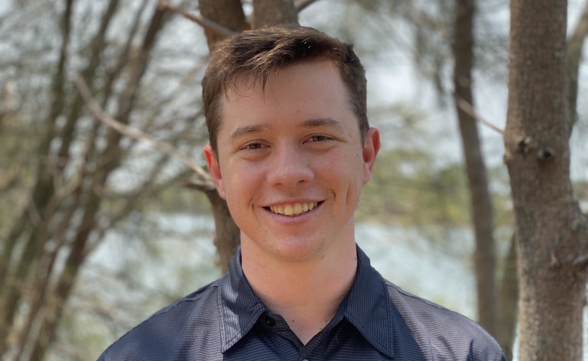

Cameron
Cameron was born in 1980 in Brisbane, Australia. He lived most of his life in Queensland and just recently (end of
2018) moved to Tasmania to open a business in the beauty industry. Prior to that, Cameron worked in the IT industry,
having worked for over a decade as an executive on a Domain Name Registrar, a Drop Catcher, A PPC search engine and an
Affiliate Network. During this role, he picked up some technical skill in mySQL and basic front-end Development,
however he would really like to expand this and become a real technical expert. Besides work, you can find Cameron
hiking, camping, renovating, riding his motorbike or exercising with his dogs.
Cam's RMIT Student ID is s3862773 and you can email him here.
Angelyn
Angelyn was born in the Philippines(South East Asia) and moved to Australia 3 years ago to be with her
partner.
She studied hospitality management way back 2010 and did an internship in the United States.
She used to work for Expedia as a hotel specialists, business process outsourcing in Philippines.
Having an experience of basic computer and software tools from previous work, sparks her interest
to take formal education in IT after years of dedicating time being a full-time mother.
She grew up in an environment where having close family ties that likes spending quality time with loved
ones.
One of her favourite past-time is singing in a live band.
Angelyn's Student ID: s3865349 and you can email her
here.

Matt
Matt was born in Brisbane, Australia and moved to Melbourne, Australia a little over 1 year ago. He is
a bit of a mixed bag in terms of his education history, having studied a little of phycology and
accounting, he's now venturing into IT. He has always had a keen interest in things with buttons so
naturally has felt a passion for IT since he was a child. Although Matt has no formal IT experience he
has been involved in hardware setup, basic IT support, self-taught in some Microsoft Office Suite
applications such as PowerAutomate and on two occasions has worked closely with developers to create new
healthcare systems for the aged and disability sector. When he's not working or pivoting tables, he
enjoys finding a good TV show to binge, fiercely competing with his family in a game of monopoly or
discovering a cool new restaurant in Melbourne.
My RMIT Student ID is S3828485 and you can email me
here.

Kylie
Kylie was born in Hong Kong and moved to Sydney, Australia with her family as a very young child.
She grew up with a variety of outdoor interests but when her Dad brought home a Sinclair ZX81 (an early
PC prototype made in Cambridge UK)
in 1981 she taught herself to program in Basic.
An interest in technology was sparked.
As a young adult, Kylie worked her way through several IT roles, progressing from first level Helpdesk,
to LAN Admin, to Disaster Recovery for Y2K prep,
to Technical Process Analyst. Her IT interest lies at the intersection of technology and
people and the inherent security challenges, plus what efficiencies IT can offer teams. A move to
Queensland in the late 2000s saw a short career pivot
to publishing and marketing. Returning to IT work in 2015, these days Kylie typically project
manages teams on
Programs with some sort of transformation such as ERP. She loves bushwalking with her grown up
kids.
Kylie's Student ID is s3731231 and you can email her here.

Dylan
Dylan was born at Port Macquarie, Australia in 1997. He grew up between New South Wales, Queensland and
Papua New Guinea.
Most of his time was spent fishing with family or playing any sport I could get my hands on but
primarily Soccer and Basketball.
As he made his way through highschool he found himself in a trainee / intern program for a local travel
company where he started his career
working in Payroll and HR helping to manage employees around Australia before finding his next and more
permanent position in a Project Development
role. He worked at DAE for five years before recently moving across the country to rural South Australia
where he now spends his time working
Administration and Systems while also undertaking a degree in IT.
My RMIT Student ID is s3863801 and you can email me here.